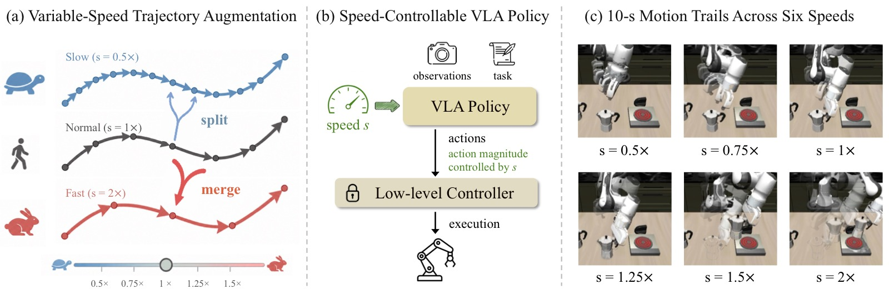
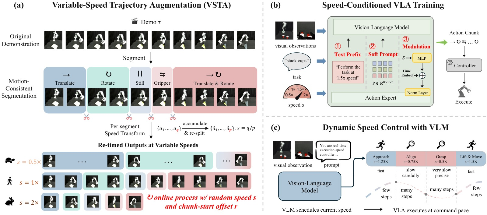
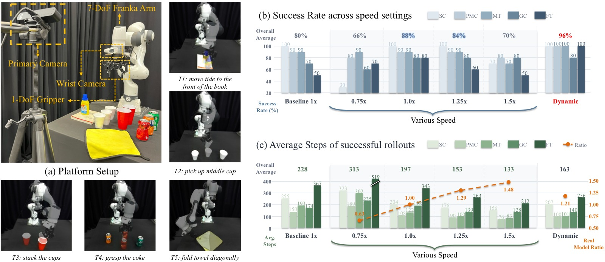
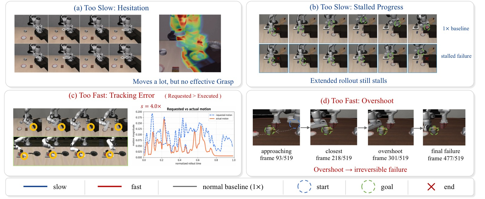

TempoVLA: Learning Speed-Controllable Vision-Language-Action Policies
论文信息 - 作者：Dong Jing (RUC), Jingchen Nie (FDU), Tianqi Zhang (UNC), Jiaqi Liu (UNC), Huaxiu Yao (UNC), Zhiwu Lu (RUC), Mingyu Ding (UNC) - 通讯作者：Zhiwu Lu, Mingyu Ding - 投稿方向：CoRL 2026 - arXiv ID：2606.06491 - 代码：未开源（论文中未提供代码仓库）
一、核心问题
机器人操作任务天然存在速度异构性：低风险的自由空间移动阶段应该快速执行，而高风险的接触阶段（抓取、插入等）需要缓慢、精确的运动。然而，现有的 Vision-Language-Action (VLA) 模型从训练演示中静默继承单一固定速度，无法在不同阶段灵活切换执行节奏。
现有加速方法（模型压缩、KV-cache 复用、异步 chunk 执行、RL 微调等）存在两个根本局限：
- 它们只是将策略从一个固定速度换到另一个固定速度，而非提供显式的、按需的速度控制
- 它们只关注加速，而减速（对精密插入、易碎物品交接等接触密集型行为至关重要）几乎未被探索
核心挑战：如何让单个 VLA 模型具备显式的、双向的速度控制能力，而无需从头重新训练其基础架构？
二、核心思路 / 方法
TempoVLA 的出发点是观察到：在具身设置中，每个预测动作的幅度已经决定了机器人移动的速度。基于此，从数据侧和模型侧两端同时入手：
- 数据侧：VSTA（Variable-Speed Trajectory Augmentation）——在线将任意演示重定时到目标速度
- 模型侧：将速度 $s$ 作为显式条件输入策略，通过三种注入方案缩放预测动作幅度
- 下游低层控制器完全不变
2.1 VSTA：可变速度轨迹增强
VSTA 在训练期间在线运行，包含三个步骤：
步骤一：运动一致性分割（Motion-Consistent Segmentation）
将每个演示切分为内部运动一致的段（segment）。每一帧标记为四种运动模式之一——静止（still）、平移（translate）、旋转（rotate）、平移+旋转（translate-and-rotate）。模式变化处设边界，同一模式内当运动方向反转（余弦相似度低于阈值 $\tau_{\text{dir}}$）时也设边界。夹爪开/合事件作为硬边界，确保离散状态切换不会被重采样模糊。
步骤二：Chunk 级速度变换（Chunk-Level Speed Transform）
将目标速度表示为 $s = q/p$（$q, p$ 互质），其中 $q$ 个源帧映射到 $p$ 个输出帧：
- $q > p$：加速（合并动作）
- $q < p$：减速（拆分动作）
对每个 segment 内的非重叠 $q$ 帧 chunk，累加其总运动量 $\Delta = \sum_{i=1}^{q} a_i$，然后将 $\Delta$ 线性重新分配为 $p$ 个等幅步长。关键性质：$p$ 个新动作的总和精确等于 $\Delta$，因此 chunk 的积分运动被保留，只有 chunk 内部的形状被改变。
累积-拆分操作的前提是动作空间对线性组合封闭。这对 $\mathbb{R}^3$ 中的 Cartesian 平移、关节速度、以及 $\mathfrak{so}(3)$ 中的轴角旋转增量成立。单位四元数、旋转矩阵、欧拉角等不封闭表示需要先映射到 $\mathfrak{so}(3)$ 或使用 SLERP 流形插值。
步骤三：在线 Chunk 起始采样（Online Chunk-Start Sampling）
加速时只有 chunk 起始帧的观测对应有效动作，其余 $q-1$ 个观测在训练中会被丢弃。为避免永久丢失，VSTA 为每个 segment 随机采样偏移量 $r \sim \mathcal{U}\{0, \dots, q-1\}$，每次训练采样该演示时重新抽取。在训练过程中，每个源帧最终都会成为某个 chunk 的起始帧。

图1：TempoVLA 总览图，由三部分组成。
子图 (a) VSTA 重定时机制：展示如何通过合并（merge）或拆分（split）连续动作来改变执行速度，同时保留运动语义。加速时多个动作合并为较少的大幅度动作，减速时少量动作拆分为更多的小幅度动作。
子图 (b) 速度条件注入：策略以标量速度 $s$ 作为显式条件输入，$s > 1$ 加速、$s < 1$ 减速、$s = 1$ 恢复默认速度。$s$ 缩放预测动作的幅度，低层控制器保持不动。
子图 (c) 运动轨迹可视化：同一 TempoVLA 策略在六个不同命令速度（0.5x 到 2x）下的 rollout 运动轨迹。慢速命令下轨迹收紧（精确但耗时），快速命令下轨迹拉伸（高效但可能不稳定）。这张图直观展示了单一策略的多速度执行能力。
2.2 速度条件注入方案

图2：TempoVLA 框架总览，由三个子图组成，分别展示数据侧、模型侧和部署侧的完整流程。
子图 (a) VSTA 数据处理流程：展示如何将每个运动一致性 segment 从 $q$ 帧重新分配为 $p$ 帧以实现 $s = q/p$。图中说明了 chunk 起始偏移 $r$ 的在线随机采样机制，以及 trailing remainder（不足 $q$ 帧的尾部）保持原样直通（passthrough）的处理方式。
子图 (b) 三种速度注入方案：(1) Text Prefix——在原始指令前添加 "Perform the task at x speed." 文本前缀，架构完全不变；(2) Speed-Modulated RMSNorm——小型两层的 MLP $\phi_{\text{mod}}(s)$ 将速度标量嵌入后与 flow-matching 时间步嵌入相加，驱动每个 expert 层的自适应 RMSNorm；(3) Soft Prompt with Speed Anchors——维护可学习张量 $\mathbf{P} \in \mathbb{R}^{K \times P \times d_{\text{emb}}}$，为 $K$ 个训练速度锚点各存储 $P$ 个软提示 token，推理时选择最近锚点。
子图 (c) VLM 动态调度：部署时，VLM（GPT-4o）接收当前观测和提示作为输入，预测接下来几个 action chunk 的速度 $s_t$，TempoVLA 以该速度执行。VLM 和 TempoVLA 仅通过标量 $s$ 通信，规划器可独立升级而无需重新训练策略。
2.3 VLM 驱动的动态速度调度
除了固定速度命令，TempoVLA 与高层 VLM 配合时可实现自动化的动态速度调度：
- VLM 观测当前场景和任务指令，按 chunk 区间分派速度
- 低风险自由空间阶段加速通过，高风险接触阶段（抓取、插入）减速执行
- VLM 和策略之间仅通过标量 $s$ 通信，架构解耦
三、训练目标
TempoVLA 本身不引入新的损失函数。它基于 $\pi_{0.5}$（flow-matching VLA，建立在 PaliGemma 上），使用标准的模仿学习目标：
其中 $\widetilde{\mathcal{D}}$ 是经过 VSTA 增强的多速度数据集，$\pi_\theta(o_t, s)$ 是速度条件化策略，$\mathcal{L}$ 是 flow-matching 目标。
核心训练细节：
- 32 块 H20 GPU，总 batch size 512（LIBERO）
- 16 块 H20 GPU，总 batch size 128（真实世界）
- AdamW 优化器，余弦衰减调度，学习率 5e-5
- LIBERO 上训练 30k 迭代，真实世界 10k 迭代
四、实验与结果
4.1 仿真实验（LIBERO）
LIBERO 提供四组操作任务套件（Spatial、Object、Goal、Long），各含 10 个任务和 500 条人类遥操作演示。动作空间为 7 维末端执行器命令：平移 $(\Delta x, \Delta y, \Delta z)$、轴角旋转增量、夹爪信号。
VSTA 可行性验证
| 目标速度 $s$ | 数据比 | 成功率 (%) | 运动误差 |
|---|---|---|---|
| 0.5 | 0.5 | 83.0 | 2.8E-10 |
| 0.75 | 0.76 | 92.9 | 4.4E-9 |
| 1 | 1 | 97.6 | -- |
| 1.25 | 1.20 | 92.4 | 1.1E-8 |
| 1.5 | 1.43 | 81.6 | 2.2E-8 |
| 2 | 1.90 | 67.5 | 4.8E-8 |
关键发现：实际数据比紧密跟踪目标速度（高速端因整数 chunk 数要求有轻微舍入偏差），运动误差始终低于 $5\times 10^{-8}$，可忽略不计。速度越远离 1x，成功率单调下降。
速度注入方案消融
三种注入方案（Text、Modulation、Soft Prompt-8）的平均成功率分别为 96.8 / 96.8 / 96.5，差距在 0.3% 以内。三种方案的 rollout 步数也相当。论文选择 Text 作为默认方案，因为它最简单灵活，无需架构改动或预定义锚点集。
训练速度范围的影响
以单速度基线（96.7%）为基准，在三个逐步扩展的速度范围上训练：
| 速度 | 窄范围 $\{0.75,1,1.25,1.5\}\times$ | 宽-大步 $\{0.5,1,1.5,2\}\times$ | 宽-细步 $\{0.5,0.75,...,2\}\times$ |
|---|---|---|---|
| 0.5x | -- | 94.1 | 95.0 |
| 0.75x | 96.5 | -- | 96.3 |
| 1.0x | 96.9 | 96.8 | 96.9 |
| 1.25x | 97.0 | -- | 97.4 |
| 1.5x | 96.8 | 97.2 | 97.3 |
| 1.75x | -- | -- | 95.6 |
| 2.0x | -- | 88.4 | 89.4 |
核心发现： 1. VSTA 提升 1x 性能：所有速度范围训练的模型，其 1x 成功率均不低于单速基线，Object 和 Goal suite 上提升达 +2.0 ~ +2.6 个百分点——速度条件训练迫使策略提取更细粒度的物体和目标感知特征 2. 峰值性能偏离 1x：每个速度条件策略的峰值成功率出现在 1.25x 或 1.5x 而非 1x——遥操作数据中存在节奏松弛，VSTA 的合并操作在适度加速时压缩掉了这些冗余 3. 更细的速度粒度有帮助：将步长从 0.5 细化到 0.25 在所有共享速度点都提升了成功率 4. 实际速度 vs 数据速度比：模型在高速端欠冲（2x 命令下仅实现 1.56-1.58x），原因包括纠错步骤增加 rollout 长度和低层控制器无法准确跟踪大幅动作
极端速度压力测试
在 $\{0.25, 0.5, ..., 4\}\times$ 的宽范围上训练后：
| 速度 | 平均 SR | 模型比 | 控制器差距 (位置 m/旋转 rad) |
|---|---|---|---|
| 0.25x | 75.8 | 0.28 | 0.009 / 0.015 |
| 0.5x | 92.8 | 0.53 | 0.019 / 0.031 |
| 1x | 96.6 | 1.00 | 0.038 / 0.069 |
| 1.5x | 96.6 | 1.36 | 0.057 / 0.100 |
| 2x | 88.3 | 1.60 | 0.075 / 0.129 |
| 2.5x | 72.8 | 1.58 | 0.095 / 0.151 |
| 3x | 56.0 | 1.54 | 0.112 / 0.189 |
| 4x | 34.3 | 1.63 | 0.146 / 0.243 |
关键发现： - 速度控制在 0.5x-1.5x 范围内退化优雅（SR > 92），超出后性能在两端下降 - 加速瓶颈在控制器而非 TempoVLA：控制器差距从 1x 的 0.038m 激增到 4x 的 0.146m，单步目标过大导致操作空间控制器无法在单控制周期内跟踪 - 模型比在 $s \ge 2\times$ 后饱和于约 1.6x，无论 TempoVLA 预测什么，机器人无法移动得比控制器能跟踪的速度更快
4.2 真实世界实验
使用 7-DoF Franka 手臂配 1-DoF 平行夹爪，一个主相机和一个腕部相机，在 5 个任务上评估（4 个 pick-and-place + 1 个可变形物体任务），每任务 50 条遥操作轨迹训练，每速度 10 次 rollout 评估。

图3：真实世界实验设置和主要结果。
子图 (a) 任务设置：展示 Franka 手臂上的五个任务——四个标准 pick-and-place 行为和一个可变形物体操作任务（如折叠布料）。每个任务需要不同的接触精度和运动模式，适合验证速度控制的双向灵活性。
子图 (b) 成功率对比：单速基线（1x）为 80.0%，TempoVLA 1x 提升至 88.0%（+8 个百分点），验证了 VSTA 的数据增强效应在真实硬件上也成立。GPT-4o 动态调度变体达到最高的 96.0% 成功率，比最佳固定速度配置高出 8 个百分点，同时保持平均 1.21x 的实际加速。
子图 (c) 模型比跟踪：实际实现的模型比在 0.75x 命令下为 0.63x，1.25x 命令下为 1.29x，1.5x 命令下为 1.48x，紧密跟踪命令比。这表明速度条件在真实硬件上的转化是忠实的——不仅是策略预测层面，而且通过了不变的低层控制器。
动态速度调度结果
GPT-4o 调度 + TempoVLA 达到 96% 平均成功率，比最佳固定速度（88% at 1x）高 8 个百分点，同时平均实际加速 1.21x。尽管 prompt 鼓励激进的加速，实际调度偏保守，绝大多数决策落在 1x 或 1.25x 档位。GPT-4o 能可靠读取执行状态，正确预判自由空间移动、精细对准和接触阶段。
4.3 失败模式分析

图4：极端速度下的失败模式定性分析，四个子图分别展示低速和高速下的典型失败案例。
子图 (a) 低速-犹豫（Hesitation）：在极低速度（如 0.25x）下，末端执行器在目标物体周围产生重复的局部运动，但这些运动不足以累积成有效抓取。策略保持活跃，但每步位移过小，无法可靠驱动系统跨越关键操作转换（接近→接触→抓取）。
子图 (b) 低速-停滞（Stalled Progress）：即使扩展 rollout 步数预算，机器人仍停留在类似的局部行为模式中。这说明失败不仅仅是控制步数不足的问题，而是每步贡献的有效进展太少，策略被困在阶段边界附近。
子图 (c) 高速-跟踪误差：策略发出较大的每步目标，但低层控制器无法在单个控制间隔内忠实执行。这与极端速度压力测试中的控制器差距测量一致——模型比在 1.6x 左右饱和。
子图 (d) 高速-超调（Overshoot）：末端执行器过于激进地接近目标区域，越过有效交互窗口，策略来不及纠正运动。这类失败在接触密集型阶段尤其致命——一旦夹爪越过物体或将其推入分布外状态，剩余 rollout 可能无法恢复。
实用启示：TempoVLA 不应以极端固定速度执行整个 rollout，而应根据当前操作阶段选择速度——自由空间阶段快速移动，接触密集阶段慢速执行。这与动态速度调度的设计理念一致。
五、关键洞察与技术亮点
-
动作幅度即速度：不需要修改控制器或推理管线，直接通过缩放预测动作的幅度来控制执行速度，设计极其简洁
-
VSTA 的双重作用：既是数据增强工具（使单速数据变为多速数据），又是隐式正则化器（速度条件训练迫使策略学习更鲁棒的特征，从而提升 1x 性能）
-
速度控制的注入几乎无成本：三种注入方案（文本前缀、RMSNorm 调制、软提示）性能几乎无差别，用最简单的文本前缀即可，无需架构改动
-
峰值性能不在 1x：速度条件训练后模型在 1.25x–1.5x 表现更好，因为 VSTA 的合并操作压缩了遥操作数据中的节奏冗余
-
加速瓶颈在控制器，不在策略：极端速度下控制器差距是主要限制因素，TempoVLA 本身在 0.5x–1.5x 范围内退化优雅
-
VLM + 标量通信的优雅架构：通过将策略和控制解耦（仅用标量 $s$ 通信），可以用任意 VLM 替换调度器，无需重新训练策略
-
运动语义保留：VSTA 的累计-拆分操作确保 chunk 的积分运动精确保留，改变的仅是 chunk 内部的动作分布形状
六、局限性
-
高速饱和：实际加速在 1.6x 左右饱和，受限于低层控制器的跟踪带宽。共同调优控制器和 TempoVLA 是自然的扩展方向
-
VSTA 对非组合动作空间的限制：当前实现要求动作空间对线性组合封闭（平移、关节速度、轴角旋转），单位四元数、旋转矩阵、欧拉角等需要先映射到合适表示
-
VLM 调度延迟：当前实现中 GPT-4o 在 action chunk 之间同步调用，增加了 roll-out 的 wall-clock 开销
-
速度归一化缺失：当前以原始演示速度为 1x，但人类操作者的速度在演示内和演示间存在差异。更干净的方案是先对数据集内速度变异性做归一化
-
低速端退化：在 0.25x 时成功率降至 75.8%，每步动作幅度接近零时策略对视觉模糊状态更敏感
七、关键概念速查
| 概念 | 说明 |
|---|---|
| VLA | Vision-Language-Action 模型，从视觉和语言输入直接预测机器人动作 |
| VSTA | Variable-Speed Trajectory Augmentation，通过合并/拆分动作在线重定时演示 |
| $s = q/p$ | 速度因子表示为互质整数比，$q$ 源帧 → $p$ 输出帧 |
| Motion-consistent segmentation | 按运动模式（静止/平移/旋转/平移+旋转）和方向反转切分演示 |
| Speed conditioning | 将标量速度 $s$ 注入 VLA 的三种方案：文本前缀、RMSNorm 调制、软提示 |
| Flow-matching | $\pi_{0.5}$ 使用的动作生成范式，对动作分布进行生成式建模 |
| $\mathfrak{so}(3)$ | 3D 旋转的李代数，轴角表示所在空间，对线性组合封闭 |
| Controller Gap | 策略请求的每步运动量与控制器实际实现的运动量之间的差异 |
| Dynamic speed scheduling | VLM 根据场景按 chunk 动态分配速度，TempoVLA 执行 |